Samurai
Samurai · 13 new skills on Project4
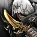
AssassinationNew
The Samurai backstab. Power 12000.
From behind the damage is doubled, from the side +30%. A stunned or knocked down target counts as from behind.
Requires a one-handed sword.
From behind the damage is doubled, from the side +30%. A stunned or knocked down target counts as from behind.
Requires a one-handed sword.
ErosionNew
Poisons the target: damage over time for 15 sec. and Speed -20%.
Requires a one-handed sword.
Requires a one-handed sword.
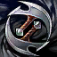
Kage ShibariNew
Shadow binding: the target is stunned for 3 sec.
Requires a one-handed sword.
Requires a one-handed sword.
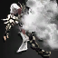
KawarimiNew
Substitution: you jump back, leave a decoy and vanish. For 30 sec. you are hidden, Speed +30%, you move silently. Any action except moving ends it.
Requires a one-handed sword.
Requires a one-handed sword.
Ninpo: FireNew
Ninja way of the fire. For 30 min., Atk. Spd. +10%, Speed +15.
Only one Ninpo at a time.
Requires a one-handed sword.
Only one Ninpo at a time.
Requires a one-handed sword.
Ninpo: ForestNew
Ninja way of the forest. For 30 min., P. Skill Power +12%.
Only one Ninpo at a time.
Requires a one-handed sword.
Only one Ninpo at a time.
Requires a one-handed sword.
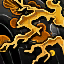
Ninpo: MountainNew
Ninja way of the mountain. For 30 min., P. Def. +15%, M. Def. +10%.
Only one Ninpo at a time.
Requires a one-handed sword.
Only one Ninpo at a time.
Requires a one-handed sword.
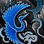
Ninpo: WindNew
Ninja way of the wind. For 30 min., Critical Rate +20%, Critical Damage +10%, P. Skill Critical Rate +20%.
Only one Ninpo at a time.
Requires a one-handed sword.
Only one Ninpo at a time.
Requires a one-handed sword.
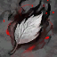
SeppukuNew
A Samurai would rather die by their own hand than by the enemy's.
When HP is 20% or lower, takes your own life: the enemy does not get the kill. The target is shamed for 10 sec.: Speed -20%, received healing -40%, cannot be dispelled. Party members within 1000 get P. Atk. / M. Atk. +10% for 20 sec. You cannot be resurrected for 60 sec.
Cannot be used in the Olympiad or in events.
Requires a one-handed sword.
When HP is 20% or lower, takes your own life: the enemy does not get the kill. The target is shamed for 10 sec.: Speed -20%, received healing -40%, cannot be dispelled. Party members within 1000 get P. Atk. / M. Atk. +10% for 20 sec. You cannot be resurrected for 60 sec.
Cannot be used in the Olympiad or in events.
Requires a one-handed sword.
Shadow CloneNew
Your shadow clones strike the target and up to 5 enemies around it. Power 3000.
Requires a one-handed sword.
Requires a one-handed sword.
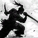
ShurikenNew
Throws a shuriken at the target and slows it.
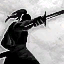
Single FlashNew
A strong katana cut that always lands. Power 6000. 50% chance to make the target bleed for 10 sec.
Deals more damage from behind (+30%) or the side (+10%), and to a stunned or knocked down target as from behind.
Requires a one-handed sword.
Deals more damage from behind (+30%) or the side (+10%), and to a stunned or knocked down target as from behind.
Requires a one-handed sword.
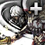
Smoke BombNew
You vanish in smoke: for 5 sec. you can not be targeted. Any action except moving ends it.
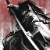
Adamant WillLv. 4
The will is a sword by which our mind determines the way.
Removes all debuffs and for a few sec. increases resistance to debuffs.
Requires a one-handed sword.
Removes all debuffs and for a few sec. increases resistance to debuffs.
Requires a one-handed sword.
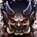
AdventLv. 4
Control the sword with your heart and not with your hand.
For 60 sec., P. Accuracy, Atk. Spd. and Critical Damage up. Basic attacks and attack skills deal additional damage equal to 50% of your P. Atk. to nearby enemies.
Only one of Determination, Omen and Advent at a time.
Requires a one-handed sword.
For 60 sec., P. Accuracy, Atk. Spd. and Critical Damage up. Basic attacks and attack skills deal additional damage equal to 50% of your P. Atk. to nearby enemies.
Only one of Determination, Omen and Advent at a time.
Requires a one-handed sword.
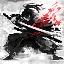
Battojutsu
Iai: draws the katana in one strike. The strongest cut of the Samurai.
Deals more damage from behind (+30%) or the side (+10%), and to a stunned or knocked down target as from behind.
Requires a one-handed sword.
Deals more damage from behind (+30%) or the side (+10%), and to a stunned or knocked down target as from behind.
Requires a one-handed sword.
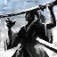
DeterminationLv. 6
Courage is the beginning, determination is the acceptance of the end.
For 30 sec., P. Accuracy +5, Atk. Spd. +10%, P. Skill Power +30%, Critical Rate for basic attacks +20%.
Only one of Determination, Omen and Advent at a time.
Requires a one-handed sword.
For 30 sec., P. Accuracy +5, Atk. Spd. +10%, P. Skill Power +30%, Critical Rate for basic attacks +20%.
Only one of Determination, Omen and Advent at a time.
Requires a one-handed sword.
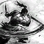
Disastrous ShriekLv. 4
A swift attack with the scabbard knocks the target down.
Makes nearby hiding enemies visible and prevents them from hiding again for 3 sec.
Base success rate: 60%
Inflicted status: Obstruction (Disarm, Hold, Blind, Block, Aggression, Silence, Banishment, Bluff, Stealth).
Requires a one-handed sword.
Makes nearby hiding enemies visible and prevents them from hiding again for 3 sec.
Base success rate: 60%
Inflicted status: Obstruction (Disarm, Hold, Blind, Block, Aggression, Silence, Banishment, Bluff, Stealth).
Requires a one-handed sword.
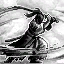
Full TwistLv. 4
Spins the katana and hits nearby monsters three times. PvE only.
Requires a one-handed sword.
Requires a one-handed sword.
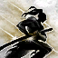
ManeuverLv. 9
Samurai's sword does not hit the enemy, it opens the way.
Charges toward the target, hits the target and nearby enemies and knocks them down for 2 sec.
Requires a one-handed sword.
Charges toward the target, hits the target and nearby enemies and knocks them down for 2 sec.
Requires a one-handed sword.
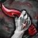
OmenLv. 3
Changes come when your senses know the truth.
For 20 sec., P. Atk. +15%.
Only one of Determination, Omen and Advent at a time.
Requires a one-handed sword.
For 20 sec., P. Atk. +15%.
Only one of Determination, Omen and Advent at a time.
Requires a one-handed sword.
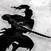
PursuitLv. 5
Samurai's resilience manifests not in waiting, but in moving forward relentlessly.
Charges toward the target, hits it and holds it for 3 sec. Resets the cooldown of Maneuver.
Requires a one-handed sword.
Charges toward the target, hits it and holds it for 3 sec. Resets the cooldown of Maneuver.
Requires a one-handed sword.
Relax
While sitting, recovers HP, MP and CP quickly. Can not be used in combat. Consumes 10 Relax Holy Water.
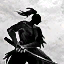
Take LifeLv. 9
A clean katana cut that always lands.
Deals more damage from behind (+30%) or the side (+10%), and to a stunned or knocked down target as from behind.
Requires a one-handed sword.
Deals more damage from behind (+30%) or the side (+10%), and to a stunned or knocked down target as from behind.
Requires a one-handed sword.
Weapon DestructionLv. 4
When your mind has lost, your body is sure to follow.
Players only. Removes invincibility from the target and for 10 sec. its Max HP -15%.
Requires a one-handed sword.
Players only. Removes invincibility from the target and for 10 sec. its Max HP -15%.
Requires a one-handed sword.
Accuracy BonusLv. 7
Increases P./ M. Accuracy.
Divine Expansion
Buff slots +1.
Divine InspirationLv. 6
Buff slots +1.
Expose Vulnerability
Gives flesh and takes bones. Decreases the enemy's P. Def. by exposing their weakness when hit. Increases Critical Rate for basic attacks.
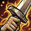
Fighter's Will
When using a melee weapon, P. Atk. +100, Atk. Spd. +10%. Increases P. Skill Power and Critical Rate for basic attacks on attack.
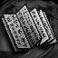
Heart of Sword
Critical Rate for basic attacks +1%
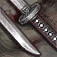
Katana MasterLv. 8
When using a one-handed sword, P. Atk. +182.8, Blow success rate +3%, Atk. Spd. +10%.
Masia's ShieldLv. 5
Through Masia's Shield's protection, received damage -10%.
Protection of Alignment
Resistance to tendency attributes +20. When damage is incurred, has a chance of additionally increasing M. Def. and Resistance to elemental attributes momentarily.
Protection of Elemental
Resistance to elemental attributes +20. When damage is incurred, has a chance of additionally increasing M. Def. and Resistance to elemental attributes momentarily.
Protection of Rune
M. Def. +15%. When damage is incurred, has a chance of additionally increasing M. Def. and Attribute Resistance momentarily.
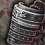
Samurai Armor MasterLv. 8
When using light armor, P. Def. +65.6, P. Evasion +7, received Critical Rate -35%, Speed +11.
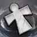
Self-awareness
P./ M. Evasion +5. When HP drops below 30%, creates a barrier that absorbs 3000 damage for 10 sec. Cooldown: 120 sec.
Skill Mastery
With a certain chance, resets skill cooldown or doubles its duration. The effect is based on STR.
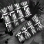
Slashing of Strow DummyLv. 4
Critical Rate +40%, Critical Damage +384.
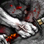
Sword SeizureLv. 4
When the sigil is equipped, P. Atk. +3%, Critical Damage for basic attacks +3%.
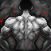
Workout
Hard training and patience let the warrior achieve the state of free mind.
On a basic attack, deals additional damage to the target equal to 100% of your P. Atk.
Requires a one-handed sword.
On a basic attack, deals additional damage to the target equal to 100% of your P. Atk.
Requires a one-handed sword.